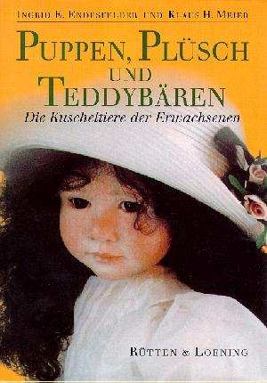

|
Puppen, Plüsch und Teddybären
Die Kuscheltiere der Erwachsenen
von Ingrid E. Endesfelder und Klaus H. Meier
272 Seiten, gebunden mit Schutzumschlag
32 ganzseitige Farbabbildungen und 70 s/w. Abb.
Verlag Rütten & Loening, Berlin 1995
48,-DM ISBN 3-352-00604-0
|
 |
| Puppen, Plüsch und Teddybären ist ein sehr einfühlsamer Begleiter in die Welt der Puppen, Teddybären und vielfältigen Kreationen aus Plüsch. Der Leser macht Bekanntschaft mit hochwertigen Kuscheltieren, Künstlerpuppen und Sammlerbären. Er ist exklusiv zu Gast in Ateliers und Werkstätten berühmter Designer und Puppenkünstlerinnen, in Museen, Ausstellungen, bei Sammlern und Liebhabern. In Rezensionen, u.a. in der Berliner Zeitung und in Fachzeitschriften, wurde insbesondere der sehr authentische Erzählstil der Autoren hervorgehoben. So erfährt man sowohl alles über edle Puppen aus Porzellan, Vinyl und Holz, originelle und ausgeflippte Teddybären als auch über ihre Macher, über Liebhaber und Sammler. Das Buch zeichnet sich durch einen ausführlichen Literaturanhang und eine Auswahl von Puppen- und Spielzeugmuseen aus. Und für die Freunde moderner Märchen wartet das Buch mit einer besonderer Überraschung auf. | |